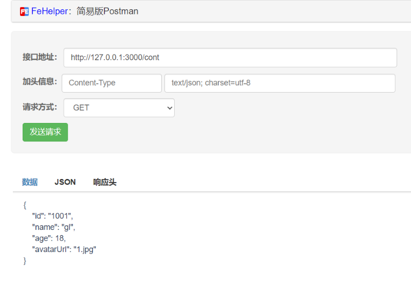

选择或创建一个文件夹如www作为各种资源的主目录；利用各种子文件夹存放不同的资源数据
. json数据
. 图片数据
. 其它资源，如视频、音频等
安装浏览器插件FeHelper前端助手或下载更加专业的postman（最近官网一直打不开）
3.1 获取数据 - GET
获取所有数据
http://127.0.0.1:3000/cont
根据id获取接口某个数据
http://127.0.0.1:3000/cont/1001
3.2 增加数据 - POST
3.3 修改数据 - PUT
3.4 根据id删除某个数据 - DELETE
http://127.0.0.1:3000/cont/1001
//引入包
const express = require('express')
const fs = require('fs')
//处理数据文件
const file = fs.readFileSync('./public/data/food.json')
const jsonFile = JSON.parse(file)
// 创建Web服务器
const app = express();
// 静态资源
app.use(express.static('public'))
//定制路由
app.get('/food', (req, res) => {
// res.send(jsonFile)
res.json(jsonFile)
})
//监听
app.listen(3000, () => {
console.log('server is on at: http://127.0.0.1:3000');
});